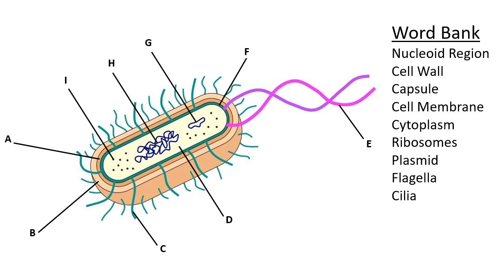
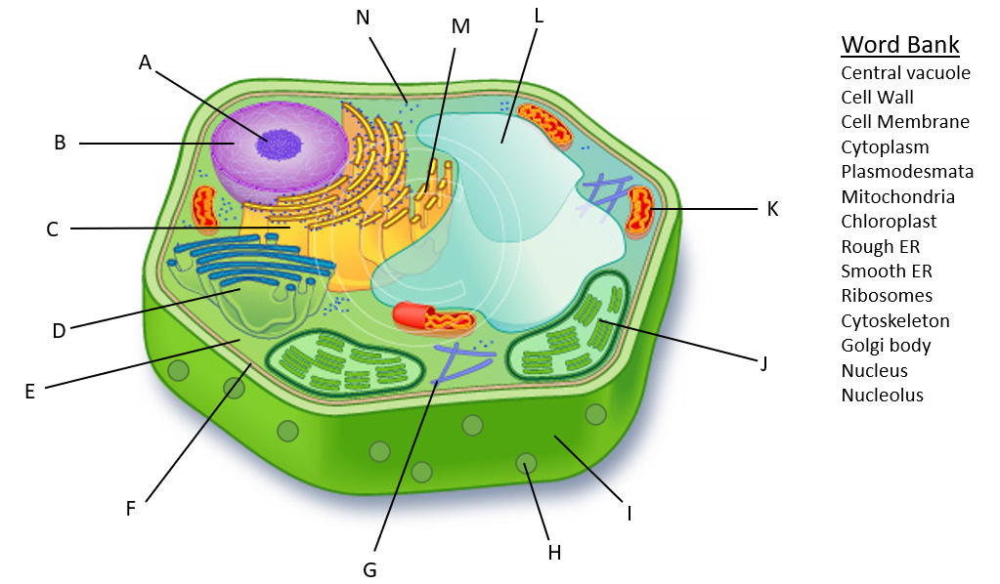
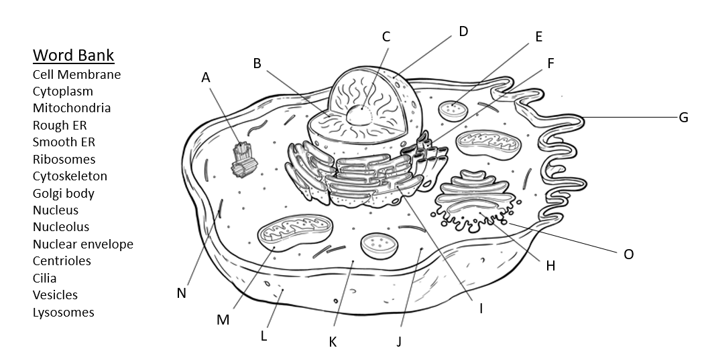

Part 1: Cell Study Guide Answer Key
Master Organelle Function & Location Matrix (22 Organelles)
Identifies the precise cellular location (Plant, Animal, Bacteria), structural features, and primary physiological function of all 22 required structures.
| Organelle / Structure | Cell Location | Structural Features | Primary Biological Function |
|---|---|---|---|
| a. Nucleus | Plant & Animal (Eukaryotes) | Double membrane (nuclear envelope), pores, chromatin | Houses genetic code ($\text{DNA}$); directs transcription, cell growth, and division. |
| b. Chloroplasts | Plant Cells (and green algae) | Double membrane, thylakoid stacks (grana), stroma | Site of photosynthesis: captures sunlight to convert $\text{CO}_2 + \text{H}_2\text{O}$ into chemical glucose and $\text{O}_2$. |
| c. Mitochondria | Plant & Animal (All Eukaryotes) | Double membrane, folded inner cristae, fluid matrix | Site of aerobic cellular respiration: oxidizes glucose to generate $\text{ATP}$ chemical energy. |
| d. Rough ER (RER) | Plant & Animal | Folded membrane cisternae studded with ribosomes | Folds, modifies, and quality-checks secretory and membrane proteins; packages into transport vesicles. |
| d. Smooth ER (SER) | Plant & Animal | Tubular membrane network lacking ribosomes | Synthesizes lipids (phospholipids, steroids), metabolizes carbs, detoxifies drugs/poisons, stores $\text{Ca}^{2+}$. |
| e. Cytoplasm / Cytosol | All Cells (Plant, Animal, Bacteria) | Semi-fluid aqueous gel containing ions, enzymes | Suspends organelles; serves as the medium for metabolic reactions (e.g., glycolysis). |
| f. Ribosomes | All Cells (Plant, Animal, Bacteria) | Non-membranous; composed of $\text{rRNA}$ and proteins | Site of protein translation: joins amino acids into polypeptides guided by $\text{mRNA}$ codons. |
| g. Cell Membrane | All Cells (Plant, Animal, Bacteria) | Phospholipid bilayer with embedded proteins, cholesterol | Selectively permeable barrier regulating cellular transport and maintaining homeostasis. |
| h. Golgi Apparatus | Plant & Animal | Stacks of flattened cisternae with cis and trans faces | Sorts, modifies (tags with sugars), and packages proteins into secretory vesicles or lysosomes. |
| i. Lysosomes | Animal Cells (Rare in plants) | Acidic single-membrane sac ($\text{pH } 4.5\text{–}5.0$) with hydrolytic enzymes | Digests cellular waste, foreign bacteria, damaged organelles (autophagy); triggers programmed cell death (apoptosis). |
| j. Vacuoles | Plant (Large Central) & Animal (Small) | Membrane-bound storage compartment (tonoplast in plants) | Stores water, nutrients, pigments, wastes; in plants, creates turgor pressure against cell wall. |
| k. Cytoskeleton | Plant & Animal (Eukaryotes) | Protein fiber web: microfilaments, intermediate, microtubules | Maintains cellular geometry, anchors organelles, enables motility, facilitates intracellular vesicle transit. |
| l. Centrioles | Animal Cells Only | Paired barrel cylinders of 9 microtubule triplets ($9+0$) | Organizes mitotic spindle fibers during animal cell division; forms basal body of flagella/cilia. |
| m. Nucleolus | Plant & Animal | Dense non-membrane region inside nucleus | Site of ribosomal RNA ($\text{rRNA}$) synthesis and ribosome subunit assembly. |
| n. Nuclear Membrane | Plant & Animal | Double lipid bilayer continuous with the Rough ER | Encloses nucleoplasm, separating transcription from cytoplasmic translation. |
| o. Nuclear Pores | Plant & Animal | Octagonal multiprotein transport channels | Regulates nucleocytoplasmic exchange: allows $\text{mRNA}$ out, imports nuclear proteins ($\text{DNA}$ polymerase). |
| p. Cell Wall | Plant (Cellulose) & Bacteria (Peptidoglycan) | Rigid extracellular carbohydrate matrix | Provides mechanical protection, prevents osmotic bursting, maintains cell shape. |
| q. Plasmodesmata | Plant Cells Only | Plasma membrane-lined microscopic channels | Direct cytoplasmic channels connecting adjacent plant cells for transport of water, ions, and chemical signals. |
| r. Gap Junctions | Animal Cells Only | Protein complexes formed by hexameric connexons | Permits direct intercellular electrical and chemical communication (e.g., synchronized heart contraction). |
| s. Microfilaments | Plant & Animal | Thin helical actin strands (~7 nm diameter) | Facilitates cell crawling, muscle contraction, cytoplasmic streaming, and cleavage furrow formation in cytokinesis. |
| t. Microtubules | Plant & Animal | Hollow tubulin cylinders (~25 nm diameter) | Intracellular motor highways, chromosome movement via mitotic spindle, structural core of cilia and flagella. |
| u. Tight Junctions | Animal Cells Only | Continuous belt-like fusion of neighboring cell membranes | Creates watertight barriers preventing fluid leakage between epithelial sheets (e.g., intestinal lining, bladder). |
| v. Nucleoid Region | Bacteria Only (Prokaryotes) | Non-membrane-bound cytoplasmic region | Contains the single circular bacterial chromosome of genomic $\text{DNA}$. |
The 5 Historical Cell Scientists
- 1. Robert Hooke (1665): Examined cork under early microscope; coined the term "cells" after monk quarters.
- 2. Anton van Leeuwenhoek (1674): Perfected microscope lenses; discovered living single-celled microbes ("Animalcules").
- 3. Matthias Schleiden (1838): German botanist; concluded that all plants are made of cells.
- 4. Theodor Schwann (1839): German zoologist; concluded that all animals are made of cells.
- 5. Rudolf Virchow (1855): Stated that all cells arise from pre-existing cells (Omnis cellula e cellula).
The 3 Tenets of Cell Theory
- All living organisms are composed of one or more cells (unicellular or multicellular).
- The cell is the most basic structural and functional unit of life.
- All cells arise from pre-existing cells through cellular division.
Plant vs. Animal Cells (Venn Comparison)
• Chloroplasts
• Large Central Vacuole
• Plasmodesmata
• Fixed/Rectangular shape
• Cytoplasm & Ribosomes
• Nucleus & Nucleolus
• Mitochondria
• RER, SER, Golgi
• Cytoskeleton
• Prominent Lysosomes
• Small multiple vacuoles
• Gap / Tight Junctions
• Round/Irregular shape
Prokaryotes vs. Eukaryotes
• No membrane-bound organelles
• Circular naked DNA
• 70S ribosomes (smaller)
• Size: 0.1–5.0 $\mu\text{m}$
• Examples: Bacteria (E. coli), Archaea
• Compartmentalized organelles
• Linear chromosomes + histones
• 80S ribosomes (larger)
• Size: 10–100 $\mu\text{m}$
• Examples: Animals, Plants, Fungi, Protists
The Endomembrane System & Secretory Protein Synthesis Pathway
Definition: The coordinated network of internal eukaryotic membranes that synthesize, modify, package, and transport proteins and lipids. Members include: Nuclear Envelope, Rough ER, Smooth ER, Transport Vesicles, Golgi Apparatus, Lysosomes, Vacuoles, and Plasma Membrane.
Compare Prokaryotes and Viruses: Why Viruses are Not Living
| Characteristic | Bacteria (Prokaryotes) | Viruses (Acellular Entities) |
|---|---|---|
| Cellular Structure | Yes: Cellular organism with membrane & cytoplasm | No: Acellular (protein capsid + genetic core) |
| Metabolism | Autonomous metabolism; produces $\text{ATP}$ | Zero independent metabolism; no $\text{ATP}$ production |
| Reproduction | Independent via binary fission | Obligate parasite: requires host cell machinery |
| Antibiotics Effect | Susceptible (targets walls/70S ribosomes) | Immune (antibiotics do NOT affect viruses) |
Question 9: Cell Diagram Labeling Keys (Bacteria, Plant & Animal)
Complete letter-by-letter solutions matching the official diagrams and word banks from Pages 2 and 3 of Dr. Irwin's Study Guide.
1. Bacteria (Prokaryotic) Cell Diagram
Word Bank Matched
| Letter | Organelle / Structure | Description & Role |
|---|---|---|
| A | Cell Wall | Middle layer (peptidoglycan); protects and shapes cell |
| B | Capsule | Outermost sticky polysaccharide layer for protection |
| C | Cilia (Pili) | Hair-like surface projections for adhesion & conjugation |
| D | Ribosomes | 70S protein translation complexes in cytoplasm |
| E | Flagella | Long whip-like tail for bacterial locomotion |
| F | Cell Membrane | Innermost lipid bilayer regulating transport |
| G | Plasmid | Small circular extrachromosomal DNA ring |
| H | Nucleoid Region | Tangled chromosomal DNA (no nuclear membrane) |
| I | Cytoplasm | Internal aqueous fluid medium |
2. Plant (Eukaryotic) Cell Diagram
Word Bank Matched
| Letter | Organelle / Structure | Description & Role |
|---|---|---|
| A | Nucleolus | Dense center inside nucleus; rRNA assembly |
| B | Nucleus | Double-membrane genetic control center |
| C | Rough ER | Membrane folds with attached ribosomes |
| D | Golgi body | Flattened cisternae for packaging & sorting |
| E | Cytoplasm | Aqueous cytosol suspending organelles |
| F | Cell Membrane | Selectively permeable bilayer inside cell wall |
| G | Cytoskeleton | Structural protein filaments and rods |
| H | Plasmodesmata | Channels through cell wall connecting cells |
| I | Cell Wall | Rigid cellulose outer framework |
| J | Chloroplast | Photosynthesis thylakoid stacks (grana) |
| K | Mitochondria | Aerobic cellular respiration & ATP synthesis |
| L | Central vacuole | Large water compartment maintaining turgor |
| M | Smooth ER | Lipid synthesis tubules (no ribosomes) |
| N | Ribosomes | Free cytoplasmic translation complexes |
3. Animal (Eukaryotic) Cell Diagram
Word Bank Matched
| Letter | Organelle / Structure | Description & Role |
|---|---|---|
| A | Centrioles | Microtubule triplets organizing mitotic spindle |
| B | Nucleus | Chromatin & genomic DNA storage |
| C | Nucleolus | Ribosomal subunit assembly factory |
| D | Nuclear envelope | Double membrane bounding nucleoplasm |
| E | Lysosomes | Hydrolytic digestive vesicles (autophagy) |
| F | Smooth ER | Lipid & steroid synthesis; detoxification |
| G | Cilia (or Microvilli) | Plasma membrane surface projections |
| H | Golgi body | Receives, modifies, sorts, and ships cargo |
| I | Vesicles | Membrane spheres transporting cellular goods |
| J | Ribosomes | Free cytoplasmic protein synthesizers |
| K | Cytoplasm | Intracellular aqueous matrix |
| L | Cell Membrane | Phospholipid bilayer outer boundary |
| M | Mitochondria | Cristae-rich ATP powerhouse |
| N | Cytoskeleton | Supportive microfilaments & microtubules |
| O | Rough ER | Ribosome-studded secretory protein foldway |
Q10: Organelle Collaboration & "Cease to Collaborate" Failure Analysis
1. Mitochondria and Chloroplast
Metabolic Energy Loop2. Cell Wall and Central Vacuole
Turgor Rigidity3. Ribosome and Rough ER (RER)
Protein Synthesis Docking4. Rough ER and Golgi Apparatus
Vesicle Transport Pipeline5. Golgi Vesicles and Vacuoles / Lysosomes
Enzyme Delivery & DigestionPart 2: Cell Membrane & Transport Answer Key
1. Phospholipid Structure & Membrane Architecture
- Glycerol Backbone: 3-carbon platform linking head and tails.
- Phosphate Group: Polar, hydrophilic ("water-loving") head, facing aqueous exterior/cytoplasm.
- Two Fatty Acid Tails: Non-polar, hydrophobic ("water-fearing") hydrocarbon chains facing inward (one saturated, one unsaturated kink).
- Phospholipid Bilayer: Amphipathic matrix permitting lateral movement.
- Integral (Transmembrane) Proteins: Span bilayer; transport channels & carrier pumps.
- Peripheral Proteins: Bound to surface; signaling & cytoskeletal anchors.
- Cholesterol: Temperature fluidity buffer (prevents freezing at low temps, maintains rigidity at high temps).
- Glycoproteins & Glycolipids: Cell-surface carbohydrate tags for self-identification and adhesion.
- Can Cross Freely: Small, non-polar molecules ($\text{O}_2, \text{CO}_2, \text{N}_2$, steroids) and tiny uncharged molecules ($\text{H}_2\text{O}$ slowly).
- Cannot Cross Freely (Requires Transport Proteins): Ions ($\text{Na}^+, \text{K}^+, \text{Ca}^{2+}, \text{Cl}^-$) and large polar molecules (Glucose, sucrose, amino acids).
2. Passive Transport & The Tonicity Matrix
| Solution Type | Solute vs. Cell | Net Water Flow | Animal Cell Status | Plant Cell Status |
|---|---|---|---|---|
| Hypotonic | $[\text{Solute}]_{\text{out}} < [\text{Solute}]_{\text{in}}$ | INTO the cell | Swells & Bursts (Lysis) ☹ | Turgid / Rigid (Ideal) ☺ |
| Isotonic | $[\text{Solute}]_{\text{out}} = [\text{Solute}]_{\text{in}}$ | No Net Flow (Dynamic Eq.) | Normal / Stable (Ideal) ☺ | Flaccid / Limp :/ |
| Hypertonic | $[\text{Solute}]_{\text{out}} > [\text{Solute}]_{\text{in}}$ | OUT OF the cell | Shrivels (Crenation) ☹ | Plasmolyzed (Membrane tears) ☹ |
3. Active Transport Mechanisms ($\text{ATP Required}$)
Moves molecules against their concentration gradient ($\text{Low} \to \text{High}$). Requires metabolic energy.
Uses $1\text{ ATP}$ to expel $3\text{ Na}^+\text{ OUT}$ and import $2\text{ K}^+\text{ IN}$. Essential for nerve impulses and resting potential.
- Phagocytosis: "Cellular Eating" — engulfs large solids/bacteria into phagosomes.
- Pinocytosis: "Cellular Drinking" — non-specific sampling of extracellular fluids.
- Receptor-Mediated: Clathrin pits bind specific target ligands (e.g., cholesterol).
- Export of hormones (e.g., insulin secretion).
- Release of neurotransmitters into synapses.
- Elimination of cellular metabolic waste.
4. Review Packet Scenario Classification
Complete classification for Page 3 table in the Cell Membrane and Transport Study Guide.
| Situation Scenario | Type of Transport | Specific Form | Direction & Tonicity Rationale |
|---|---|---|---|
| Oxygen moving from lungs into bloodstream | Passive | Simple Diffusion | Moves from high concentration in lung alveoli to low concentration in deoxygenated capillary blood. |
| Transport of hormones from one body tissue to another | Active (Bulk) | Exocytosis & RME | Secretory vesicles fuse with membrane to release hormones OUT; target cells uptake via receptor-mediated endocytosis. |
| Freshwater fish released into a marine environment | Passive | Osmosis | Marine ocean is HYPERTONIC; water rushes OUT of fish cells, causing lethal crenation and dehydration. |
| Marine shark wandering into freshwater in search of prey | Passive | Osmosis | Freshwater is HYPOTONIC; water rushes INTO shark cells, creating cellular swelling and osmotic stress. |
| Import of food particles to be used to generate ATP | Active (Bulk) | Phagocytosis | Plasma membrane extends pseudopodia to engulf large solid particles INTO the cell for lysosomal digestion. |